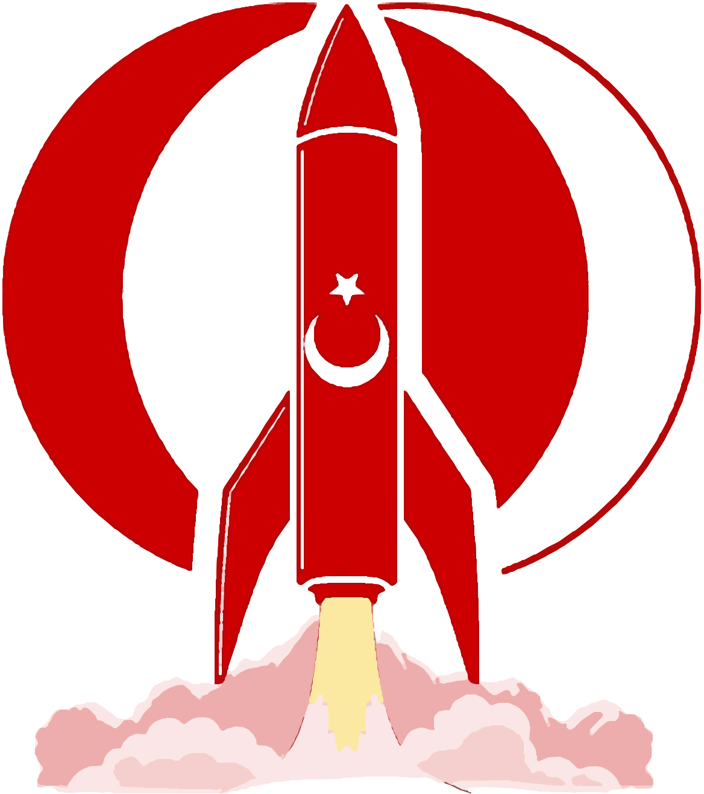

METU
Gökyüzüne ODTÜ'de ulaşıyoruz.
METUSAR, roketleri baştan sona kendi tasarlayıp üreten ve uçuran bir öğrenci takımı. Yarışmalarda yarışıyoruz, öğrendiklerimizi de herkesin kullanabileceği eğitimlere dönüştürüyoruz.
Amacımız
Neden varız ve neyi başarmak istiyoruz.
Mühendislik pratiği
Derste öğrenilen teoriyi gerçek bir roketin tasarım, üretim ve test süreçleriyle birleştirmek.
Yarışmalarda ODTÜ'yü temsil
Ulusal ve uluslararası roket yarışmalarında üst sıralarda yer alan, istikrarlı bir takım olmak.
Bilgiyi kalıcı kılmak
Her dönem edinilen tecrübeyi eğitim videoları ve dokümanlarla bir sonraki nesle aktarmak.
Siteyi keşfedin
Takım hakkında aradığınız her şey.
Yarışmalar →
Geçmişte katıldığımız yarışmalar, sonuçlarımız ve önümüzdeki yarışmalar.
Yol Haritası →
Orta vadeli hedeflerimiz ve ODTÜ'de hayata geçirmek istediğimiz projeler.
Eğitim →
Takımın hazırladığı eğitim videoları, sunumlar ve ders notları.
Referanslar →
Kitaplar, yazılımlar ve faydalandığımız dış kaynaklar.